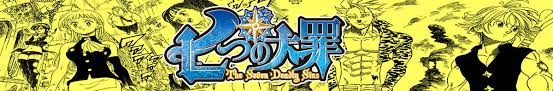

Personajes
Meliodas
El dragón de la ira y también líder de los siete pecados capitales. Pese a su reputación Meliodas en realidad es un joven bondadoso, amistoso y honorable solo llegando a manifestar arrebatos de furia ante la impotencia de no poder proteger a sus seres queridos. Si bien físicamente se parece a un adolescente en realidad es un demonio de miles de años de edad, maldecido con la vida eterna quien a su vez fundó a los siete pecados para crear una línea de defensa contra amenazas similares a los de su clan o incluso mayores. Tras la primera separación de los pecados Meliodas se hace pasar por un cantinero dueño de su propio negocio el Boar Hat (豚の帽子亭 Boā Hatto?) con el que viaja por los reinos y reúne información de sus compañeros y posteriormente ayudar a Elizabeth a reunirlos. Su poder mágico es "contraataque" (全反撃 Furukauntā?) con el que puede desviar ataques mágicos y aumentar su potencia con cada desvío.
Elizabeth
Es la tercera princesa del reino de Liones quien, junto a Meliodas, está buscando a los Siete Pecados Capitales para enfrentar a los Caballeros Sagrados. Tras confirmar que Meliodas es uno de los pecados y convencerlo de que la ayude a su causa, se une al Boar's Hat como una mesera. Es amable, tímida, confiable y valiente estando dispuesta a arriesgar su vida aun sabiendo que su búsqueda de los pecados la volvería una fugitiva o de involucrarse en las peleas de los pecados pese a su carencia de magia defensiva. Con el transcurso del tiempo su confianza hacia Meliodas florece en amor hacia él que le es correspondido aunque de una manera más lasciva y despreocupada. Eventualmente descubre que tiene sangre de druida lo que le confiere la capacidad de manifestar magia de sanación con la que asiste a los pecados en sus batallas además de revelarse que es la reencarnación de la antigua novia de Meliodas, la caballero sagrado Liz.
Merlin
El jabalí de la gula y una de las mejores hechiceras en el reino de Camelot. Merlín le hace justicia a su pecado aunque no de manera literal, al manifestar un insaciable hambre por conocimiento en cualquier ciencia, lo que la lleva a realizar todo tipo de experimentos para cumplir con sus descubrimientos. Es de los miembros que se unió con más tiempo al equipo, siendo la cofundadora al lado de Meliodas. Su poder es Infinidad ( Infiniti?) habilidad con la que puede mantener indefinidamente cualquier hechizo activo una vez lanzado y solo desactivado cuando sea su voluntad, gracias a esta habilidad Merlín es un recurso valioso para los pecados y con ella ha sido capaz de mantenerse con vida por cientos de años.
Escanor
El pecado del orgullo del leòn y el miembro más poderoso del equipo. Tiene una personalidad con dualidades; en su verdadera forma es un hombre tímido, inseguro y cobarde pero durante el día su actitud cambia a la de un hombre soberbio, arrogante y muy orgulloso que considera y trata a los demás como inferiores incluyendo a sus aliados o enemigos por igual además de que se considera a sí mismo como el que se levanta por encima de todas las demás razas. El nombre de su poder mágico es "luz solar" (太陽サンシャイン Sanshain?), magia con la que puede combatir usando a su favor el calor y un resplandor parecido al del sol, su magia aumenta considerablemente cuando más se acerca al mediodía.
King
El pecado del oso de la pereza y el rey del clan de las hadas. Su nombre real es Harlequín (ハーレクイン Hārekuin?) y físicamente es parecido a un adolescente pese a que en realidad es mucho mayor en edad. King es uno de los miembros más sensibles de los pecados y está enamorado de Diane aunque para su pesar ella se ve más interesada en Meliodas. En un principio se muestra reacio a volver al equipo debido a que es manipulado por los caballeros sagrados para combatir a sus antiguos compañeros por su odio hacia Ban quien es sospechoso de haber incendiado el bosque de las hadas y de la muerte de su hermana menor Elaine. Una vez que descubre lo que en realidad pasó King se reintegra y poco a poco va perdonando a Ban así como lograr ganarse el afecto de Diane. Su magia como rey de las hadas recibe el nombre de "desastre" (災厄ディザスター Dizasutā?) técnica con la que puede manipular la vitalidad o degeneración de los que están a su alrededor y con la que es capaz de manipular a su tesoro sagrado Chastiefol ( Reisō Shasutiforu?), una lanza mágica creada por el árbol del bosque de las hadas.
Ban
El pecado del zorro de la avaricia así como el mejor amigo de Meliodas dentro de los pecados. Es mejor conocido como «Ban el muerto viviente» debido a su condición como inmortal tras beber de la legendaria fuente de la juventud por lo que Ban no puede morir sin importar lo letal que sean sus heridas o ataques que reciba. Es de los miembros más despreocupados del grupo, tras la separación de la orden Ban fue eventualmente aprisionado en una mazmorra, habiéndose resignado a estar encerrado al creer que Meliodas estaba muerto. Una vez que se entera de que Meliodas está activo y buscando reunir al grupo Ban se reintegra motivado a encontrar de alguna manera la forma de resucitar a su amada fallecida Elaine. Su especialidad mágica es conocida como "hurto" (強奪スナッチ Sunacchi?) poder con el que puede debilitar la magia de sus oponentes o arrebatar algún objeto físico.
Gowther
La cabra de la lujuria en los siete pecados capitales. Es un muñeco creado como el avatar de un poderoso hechicero y como Meliodas formó parte de los diez mandamientos originales. Tras perder sus recuerdos de quien era Gowther vagó por mucho tiempo hasta que fue reclutado por los siete pecados capitales haciéndose muy cercano a Merlín. Se caracteriza por su personalidad rígida, plana y sin emociones así como su forma de expresarse cordial y mecanizada, debido a esto siente curiosidad por las emociones y ve a las personas como objeto de estudio. Su poder mágico es llamado invasión (Inbeishon?) con el que puede manipular, modificar o reemplazar los recuerdos de las personas y otros seres racionales.
Diana
La víbora de la envidia y también miembro de la raza de los gigantes de una actitud confiada, curiosa y sensible especialmente respecto a su apariencia. Es la segunda en integrarse al grupo, tiene un amor no correspondido por Meliodas debido a que la trata como su igual pese a su condición de gigante, razón por la que ocasionalmente se pone celosa de la atención que recibe Elizabeth y de crear un singular triángulo amoroso entre ella, Meliodas y King. Su poder mágico es "creación" ( Kurieishon?) habilidad única de los gigantes con la que es capaz de manipular la naturaleza en especial el elemento de la tierra.
Hawk
Un cerdo parlante y acompañante de Meliodas. Trabaja en el Boar Har como el conserje al comerse las sobras de la pésima comida que Meliodas cocina. En un principio, Hawk no manifiesta una habilidad mágica ofensiva por lo que casi siempre se la pasa protegiendo a Elizabeth de las subsecuentes peleas entre los pecados y los caballeros sagrados o del acoso lascivo de Meliodas hacia la princesa. Luego de sobrevivir a un fatal ataque de Hendrickson, Hawk manifiesta su propia habilidad mágica llamada "Puercomorfosis" ( Toransupōku?) la cual le permite absorber de forma temporal las habilidades de criaturas mágicas que se come hasta digerirlas.
